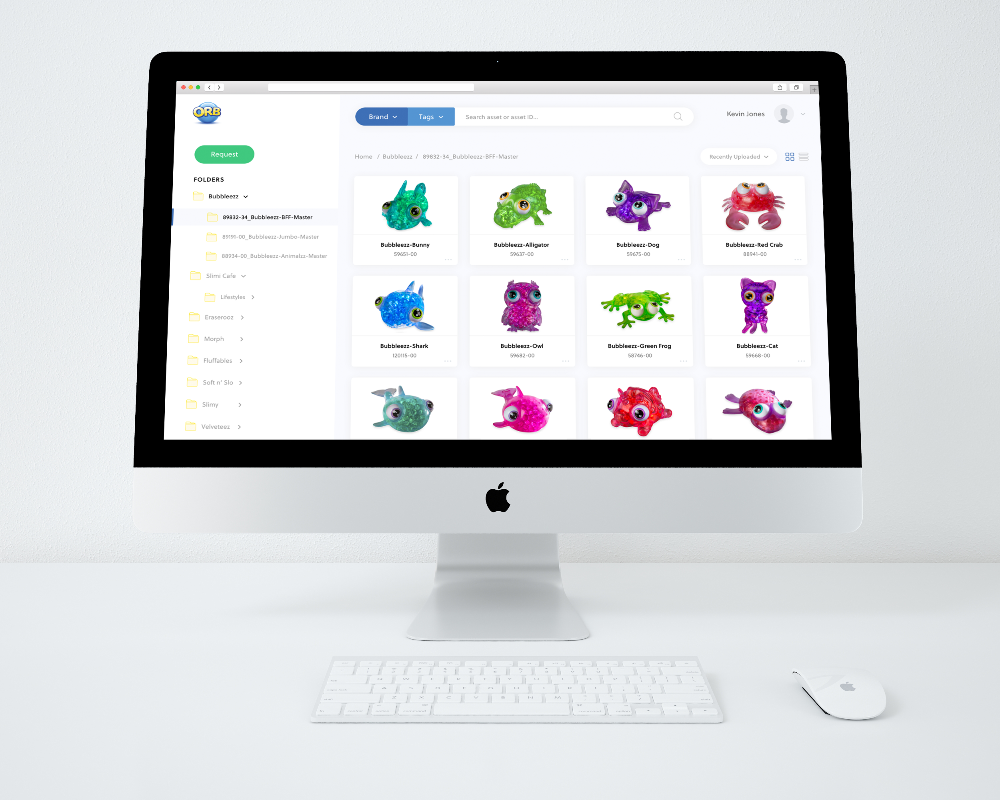

ORB Toy Asset Management Portal
Web UX Design
The Problem
ORB is currently in a hyper-growth period with 300% growth in the last year. With this growth, ORB has introduced multiple customers from all over the world. These customers require a wide range of assets from ORB (Consumer Graphics, Logos, Working files, etc.). The current system in place for delivering these assets is through email requests.
ORB is looking at building an online portal to distribute assets to customers with a back-end login access. This experience needs to be designed and optimized. We must create a new delivery system that allows the customers to select unique assets associated with brand and SKU. We need assets filed and sorted so the customers can be educated before they access the portal. We are also looking at doing a built-in form for the customer to fill out if they require custom assets not included on our portal. We need to create a customer friendly access point built into the ORBs website that will clearly communicate what ORB has to offer to their customers.
Client Mission
“Encouraging Creativity, Imagination, & Independent Play”
We plan on taking our clients mission statement into account when designing our asset portal to make sure that the designs are professional and usable, but also fun and creative like their products. This project has been something that ORB has been thinking about for a while. At the beginning of ORBs toy manufacturing journey, emails provided enough structure to fulfill all asset requests from sales members and retailers that were planning on carrying ORB products. Now, ORB is growing at a rate of 300% per year and need a more structured asset request infrastructure to support their needs and their customers' needs.
Project Goals
Since ORB’s current request system is through email, we are hoping to help create a system that will align with ORB’s rapid growth. Our main goal is for the portal to be simple and easy to use for ORB sales members and requestors—which will subsequently relieve a significant amount of work from the Asset Team, who is currently processing all of the asset requests and sending them back to the requesters personally.
Develop an intuitive organizational hierarchy to find assets on their own without assistance
Ensure that non finalized assets can only be accessed with the asset manager’s approval
Alleviate stress and extra work for asset requesters (Sales) and asset providers (Asset).
Provide clear outlines for users to ensure the intended use and purpose of the system
Research
The research questions and goals facilitate our design process and allow us to focus in on function and usability rather than small aesthetic details. With a better understanding of our user’s expectations, behaviors, needs, motivations, and attitudes, we can properly design an asset request portal that performs successfully within the company. We carefully curated these questions with a range of themes in order to establish context and requirements while also bringing us closer to our larger project goals.
Goals
- Establish a firm understanding of standard data asset management structures by analyzing alternate software services.
- Review data from the current email system to establish a better understanding of how the asset request process currently works.
- Receive direct feedback from current users of the email system indicating what ways the current system falls short is inconvenient for them.
Questions
- What are the pain points for users currently using this system and how would they like to see them addressed?
- What is the current perception of the email system and how do users want to see it changed, if at all?
- What conveniences do users find with the current system, if any?
- What ORB-specific content or features need to be added to this portal that standard DAM software might not include?
- Which users will have access to this portal and what access rights should users havegiven their positions?
Competitive Analysis
TWe chose to look at a variety of different data asset management software and portals in our competitive analysis to understand what features are vital for ORB’s request portal. Four of the competitors were specifically used for asset management and the other four were more widely known cloud platforms where you can store files.
We decided to rank our competitors on a scale of 1 to 5, 1 being effective and 5 being not effective, for each criterion and provide an explanation on why we rated it as so. For explanation of what we looked at for each criterion, see the appendix.

Categorization
Webdam and Reftab both had rankings of 5 for the categorization column. These sites were so successful for several reasons, but our biggest takeaways were the importance of customization in categorization (different ways to order folders and assets) and additionally metadata tag functionality.
Search
Google Drive assisted us in developing a solid understanding of search functionality. We found that the more options to search for the better and being able to search by things like keywords, file type, metadata tags, date added, etc.
Ease of Use
Reftab and Box promoted simplicity in their usage. Although DAM software need to support tons of different functionalities and it can be difficult to get lost in sometimes, simplistic design is vital to make sure that users don’t get confused and can't find what they need to as soon as possible.

Aesthetics
For aesthetics, visually appealing sites are generally more enjoyable to use. Minimalistic design and on brand color schemes were very successful for providing appealing aesthetics.
Language
Simple language is incredibly important in software such as this. Webdam and OneDrive both did a great job at using simplistic language and if they needed to use a term that some users may not understand, having an option to hover over the confusing word and getting a more in- depth description was a great feature.
Personalization
Being able to personalize the portal based off of user preference will play a huge factor in our designs. Webdam and Reftab allowed users to change the organization of assets based off of user preference. Users can view assets in a grid view, list view, image view, etc. depending on what they enjoy the most.
Sharing
Almost every site offered great sharing options. If a user wants to share assets with other users, they have the option to click a button and receive sharing options like email, shareable links, text message, social media, etc.
User Surveys
Our user surveys helped us reach research goals such as “receive direct feedback from current users of the email” and answer questions like “what are the pain points for users currently using this system and how would they like to see them addressed.” With mainly open-ended questions, our purpose was to get a detailed insight from the actual users who go through the current asset request process.
Participants

Our recruitment strategy was to receive survey feedback from our direct user who would be using this portal the most: the ORB Sales Team. Our client was able to send our survey on Google Form to the entire sales team who then filled it out for us. Their position titles at ORB were the following: International Administrative Assistant, Sales Coordinator, Sales Support, Sales Manager, Account Manager, and VP INTL Sales. We received a total of 8 responses, with each providing descriptive explanations on their experience with the current email system. The low number does have potential to introduce bias into our survey results, as we are only receiving feedback from a single team. We could be missing feedback from certain niche employees that would also use this site.
Usability Rating of the Email System
We asked to rate their experience using the current email asset system. With 1 being “difficult” and 5 being “easy,” this question was used as a primer question to get participants to understand what this survey was trying to assess. We had the majority rating the system as 3, meaning neutral difficulty to use. We had 0 responses for the experience being difficult, but they had numerous suggestions on improving it.
Pros
- Interaction of each request that leads to additional clarity
- Quality of work provided
- Quick and Easy
- Searchable in the mail for future reference
Cons
- Timeliness of response
- Requiring follow up
- Adding more email to their already busy inboxes
- Reliance on the individual
- Lack of visibility of availability
- Repeating the requests
Efficient Alternatives
Lastly, we asked in the survey if the participants thought there is a more efficient way to request assets than the current email system. The majority wanted some sort of “portal” that is updated with the item image and its specs. A concern for a portal like this was that the items had to be prepared in advance so that requests are made minimally. The other popular alternative was a checklist or a form that the Sales team can fill out. They would individually check off which items they need and have a standardized format for each item. The list would have items that are not final to be marked off.
“Our goal is to design a portal that has a form attached for special circumstances such as when the assets are unavailable or requiring another level of security.”
Portal
- Proactively updated
- Item details are uploaded to a central location
- Prepared and only request for special circumstances
- Private space for asset viewing with pre- imposed restrictions (i.e. certain classes of customers can only see and/or download certain assets)
Checklist / Form
- Check off which items they need
- Check off image resolution or style
- The standard list of images and specs that are accessible without having to send a request
- Mark the “not final” images ensure they are not used for web/catalog
User Personas
Analyzing our survey results we were able to grasp requirements, constraints, pain points and motivations to better craft our user personas. One of the ways the personas have been reflected in our requirements is by eliminating information overload. Right now, their user journey flow is overwhelming with a constant stream of asset request email chains (journey maps are in the appendix). The biggest goals and motivations for these personas are keeping customers happy. With these personas, they will be able to respond to their customers at a much faster rate and allow the customer and sales team member to have an easier experience.
UX Design Requirements
Sales Team: Find, Download, & Share
Web system that reduces complication to find certain asset file types
Our research found the current system is time-consuming, we want to be able to offer users
flexibility while not overwhelming them with massive amounts of assets, thus making the process
easier and faster.
Search functionality with sorting and filtering by brand, date, and item specs.
A strong search function with sorting and filtering needs to be in place to reduce the user’s struggle in finding assets and decrease the time they find the asset to forward to the customer.
Create a direct sharing feature within the portal
Users are able to share the file directly from the portal instead of downloading and attaching it to
an email. This feature would accelerate the asset request process giving the sales team an efficient
way of sending assets to clients.
Metadata Tags
Users can filter through assets based off of what metadata tags are attached. Tags can be applied to different asset types and file types.
Form to fill out for special requests and when the asset is not online
Since only finalized assets will be included within the portal, a user needs the ability to access a
request page where they can check off or fill out the specific item they need.
Asset Team: Upload and Update
Login authentication to upload as an Asset Manager
Only the asset team who are supposed to upload and update them should log in with an id and a
password. This authentication would distinguish the role between regular users who need to find
assets from back-end users who are providing those assets.
Upload assets and proactively update them
Asset managers and designers need the ability to upload assets to the portal so that the most updated versions of each asset are present.
UX Design Process
Our UX design process was heavily centered around our design requirements from our research phase. We began by getting as many ideas as possible. Our group had a mini “design jam” where we all sketched out ideas for multiple screens on our project. By focusing on quantity and not quality, we were really able to develop creative and intuitive designs for our users. From there, we compiled our ideas and created a low-fidelity paper prototype to test.
Early Ideas & Insights
Our early ideas consisted of a landing page with previewing the asset, search bar with Metadata Tags, upload pop-up, download pop-up, and request button changing to upload. We each assigned ourselves a different screen or a feature of the portal and sketched each functionality in detail. We create a few different options and decided as a team to go with the design that was most in line with our user personas and journeys. For example, the Search function was sketched out in two different versions. After looking at both versions, we decided as a team to choose the one that was going to be incorporated into one cohesive paper prototype.
Landing
Preview
Upload
Intermediate Designs and Iterations
After gathering all of our ideas and creating a final paper prototype, we created a mid-fidelity prototype on Sketch. We wanted to turn the paper prototype into a medium fidelity prototype so that all of the group members could split up and conduct usability tests. We carried most of our elements from the paper prototype except some changes to the “view” options and the “add asset” button. We also added in the bread crumbs.
Landing
Preview
Request
Upload
These are the medium fidelity pages that we based our test off of and asked users what they would do to complete each task. Our usability test was based on our Task flow diagrams for the different user personas that are included in our Description and Flow section below.
The test consisted of an introduction where we explained the background of the project to our participant, then asked a few introduction questions, and then lastly a post-questionnaire to get the user’s final thoughts and feedback. Additionally, throughout each usability test, we asked our participants to speak out loud and took notes and asked questions when necessary.
Final Design
Our final design is a stylish rendition of an asset management portal that was focused on complying with our UX design requirements. Because our system has two distinct users, we developed two user flows for both sales members and asset managers. We used these flows as guidelines for our designs and ensured that all actions shown in our flows were not only possible with our design but were efficient and enjoyable.
Click here to view the live Interactive Prototype made with Sketch + InVision.
Login
The login process is where the users are distinguished as a “sales team” member or an “asset team” member. They will have different options and restrictions when using this portal. Below are two user flows displayed to represent how the different access rights can lead to their different tasks.
Search & Metadata Tags
We implemented a powerful search feature which users can search with keyword, asset ID, or pick multiple meta tags associated with assets in order to make their searching experience as simple as possible which also helps meet our requirements regarding effective search and metadata tag functions. Once you click on the “brand” category, all 30 ORB brands show up in a dropdown, sorted alphabetically.
Organizational Hierarchy
Our site has an intuitive folder system that is sorted by brand, and also has a favorites feature where a user can have “favorite” folders that are instantly brought to the top of the folder hierarchy; this helps us meet the requirement of “reducing complication in finding assets.” Users can preview assets in a grid view or a list view. Both views help with organization hierarchy allowing them to sort the assets.
Share and Download
We implemented a share feature in which a user can preview an asset by simply clicking it, and from the preview page, the user will have the option to download or share the asset. We also included a request form that users can send to the asset team to receive work in progress assets and files. In addition to Sales Team requirements, we also developed Asset Manager requirements and designed for them as well.
Request Form
A user needs the ability to access a request page where they can check off or fill out the specific item they need. User is able to send a request by filling out this form if the asset is missing on the portal.
Upload
The most important feature for asset managers is the upload feature, in which the user can upload both files and folders directly to the portal. Once the upload is in progress, a pop-up shows the progress of each file being uploaded and a green checkmark when each file is completed.
Validation
Because we do not have an actual platform other than the current email system to compare our designs, we are holding our requirements as the standard for a successful project and believe that if we meet them effectively our designs will be validated. Our main research questions are the following:
- Is our website intuitive and easy to use?
- How does our website compare to the current email system?
- Which functions are highly beneficial and which functions are unnecessary?
To answer these research questions, we are conducting a usability testing with a set of tasks that sticks to the user workflows and our UX requirements. If we are able to confirm that these tasks easy and efficient through user testing, then we believe we will have successfully validated our designs. We interviewed the Sales and Asset team members who have previously used the email system for an open discussion, and we conducted user testing on family and friends to receive feedback and calculate the System Usability Scale score.
For each of our tasks, we recorded how easy or hard it was on a scale of 1 (Very Difficult) to 5 (Very Easy) and noted any observations that we thought were important. Overall, the tasks were easy with no difficulty.
System Usability Scale
In our post-questionnaire, we included the 10 questions to integrate the System Usability Scale to further validate our website using the “Likert scale.” The average SUS score came out to be 85, meaning that “people love your site and will recommend it to their friends.” The score of 80.3 or higher is an A.
Next Steps
Although our design was well received by our friends and families and the ORB team members, we did still receive multiple suggestions and insights as to what changes could me made moving forward. The majority of these adjustments came from our user interview with the Sales Team. Some were also brought to fruition via feedback we received from our usability tests with friends and family.
- Provide an option to download from multiple different folders in one single download.
- Compress the number of assets and allow for asset collection downloads.
- Include more flexibility and description in the asset request pop-up.
- Allow for a larger screen preview.
- Add a shareable link for asset collections
- Add ability to download an entire brand folder
- Change “Apply Filters” location and prominence
Due to time and resources, we understand the difficulty of implementing and coding our entire platform. We believe that our portal would be an ideal fit for ORBs needs and goals; however, there are many other DAM software available for purchase that could also satisfy these needs. From our time analyzing and studying these platforms, here are a few recommendations and possibilities for future DAM software to be potentially used by ORB.
- Webdam is a Data Asset Management software that has multiple functionalities and can be customized based on company needs. There is a bit of a learning curve to this software but once you get the hang of it, it is very powerful and useful. A few of our designs, particularly the grid/list views as well as the preview used Webdam as inspiration.
- Reftab is another Asset Management Software that we found to be particularly effective. Reftab is centered around user customization – you can make your own categories and verbiage that the site will then use. It is a pretty simplistic design and is relatively easy to pick up to their site.
- Canto is another prominent asset management tool that could assist you with your current needs and growth. The filtering and searching is effective and allows for lots of variety. Overall, the site is a bit complex and would certainly take some practice to use effectively, however this is likely the most powerful platform in terms of sheer functionality and possibilities. to their site.
- Tag Spaces is a more modern file management platform that focuses heavily on searching and meta tags. The design is modern and rather aesthetically appealing but could be potentially hard to pick up. Much of our concepts for meta tag and search functions were inspired by this site. to their site.
In conclusion, there are many platforms out there that could satisfy your needs, but these were our top findings from our research that we believe you could benefit from. Most of these sites have free trials and we strongly recommend checking them out and seeing if any of them call to you.